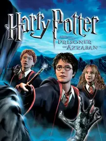

 |
|
| Tiempo de juego | 2m 2s |
| Última actividad | 23/12/2025 19:36:31 |
| Añadido | 27/7/2025 1:10:30 |
| Modificado | 10/12/2025 11:27:12 |
| Estado de finalización | Jugado |
| Librería | Playnite |
| Fuente | |
| Plataforma | PC (Windows) |
| Fecha de lanzamiento | 25/5/2004 |
| Puntuación de la Comunidad | 76 |
| Puntuación de la Crítica | 74 |
| Puntuación de usuario | |
| Género | Adventure |
| Desarrollador | KnowWonder |
| Editor | Electronic Arts |
| Característica | Single Player |
| Enlaces | |
| Tag | Voz y Texto en Español |
Vamos a ponernos la túnica y la bufanda de Gryffindor porque este es un viaje directo a la nostalgia. Los juegos basados en películas de esa época eran el sueño del pibe: la chance de meterte adentro de Hogwarts y vivir la historia en primera persona. Y el del Prisionero de Azkaban fue, para muchos, el mejor de la trilogía original en consolas y PC.
La gran genialidad de este juego, y lo que lo hizo un salto de calidad enorme respecto a los dos anteriores, fue que por primera vez podías controlar no solo a Harry, sino también a Ron y a Hermione. Y no era un simple cambio de skin; cada uno tenía hechizos y habilidades únicas que eran indispensables para resolver los puzzles. Harry usaba el Expecto Patronum, Ron encontraba pasadizos secretos y Hermione podía meterse por lugares chiquitos o congelar agua. Tenías que ir cambiando entre los tres para avanzar, una idea genial.
El juego era una delicia para los fans. Te la pasabas explorando un Hogwarts lleno de pasadizos secretos, coleccionando cromos de ranas de chocolate y grageas de todos los sabores, y yendo a clases para aprender hechizos nuevos. Y sí, obvio que podías volar en el Hipogrifo. Era todo lo que le pedíamos a la vida en 2004.
Además, el juego capturaba perfecto el tono más oscuro y maduro de la tercera película. La amenaza de los Dementores estaba siempre presente y le daba un toque más serio a la aventura.
No es un RPG profundo ni un juego de acción zarpado, es algo mucho más puro: una carta de amor a los fans. Un juego simple, encantador y que te hacía sentir que de verdad estabas en el mundo mágico.